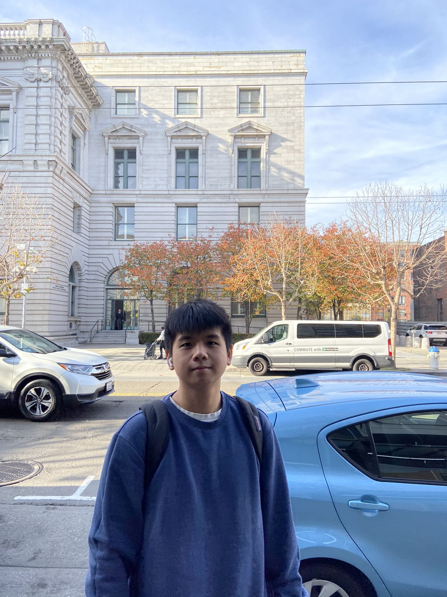

Jiaxiang Li
Major: Computer Science Year: Senior
I am from Guangzhou, China. In my free time, I enjoy playing basketball, watching movies, and walking around in the city.
Recently, I have started a new hobby -- playing badminton.
My three favorite places to eat in Berkeley:
- Imm Thai Street Food
- Sizzling Lunch
- Easterly

my favorite website
Answers to the questions:
- I've learned what things to keep in mind to observe when using the app. I've also learned about how can we analyze the app from the designer's point of view.
- My favorite part is the observation that the author gave.
- "By routinely analyzing other apps, you’ll develop your product thinking and get better at designing apps yourself."
- 7